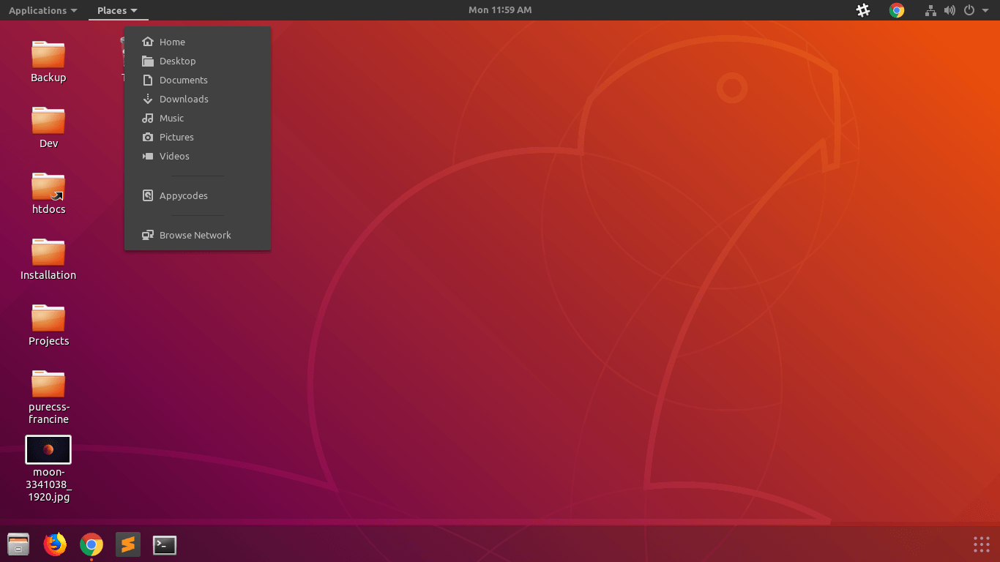
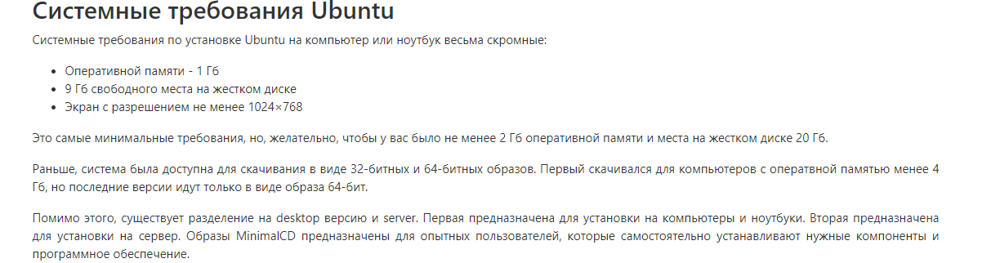
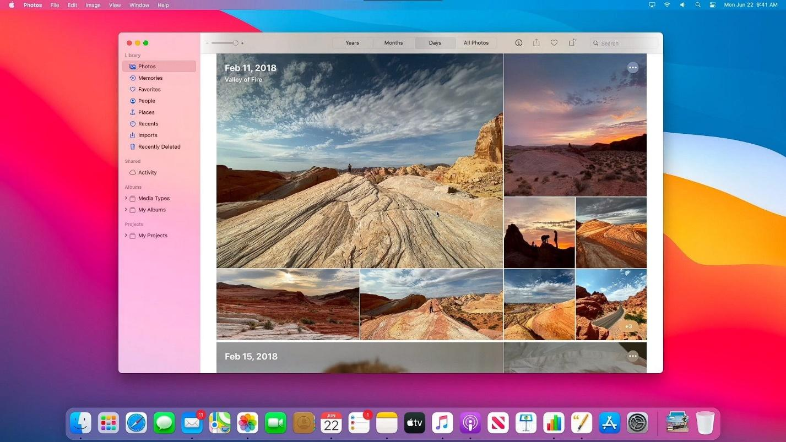
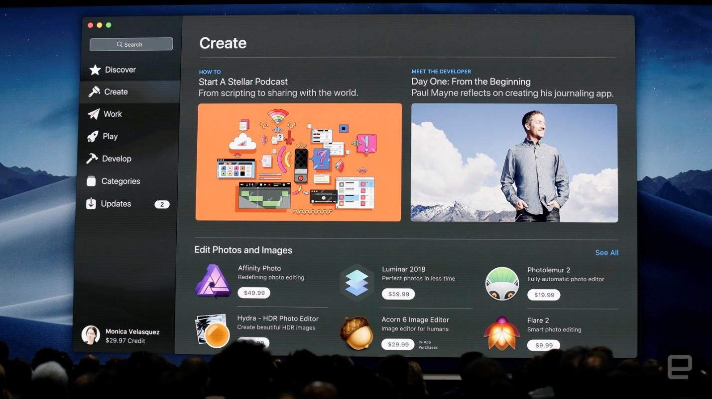
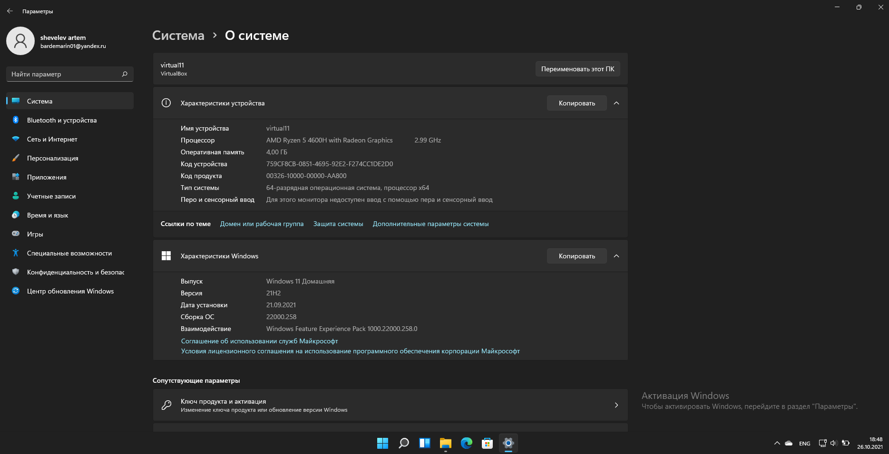

Выбор операционной системы
В данный момент на рынке операционных систем для компьютеров и ноутбуков конкурируют между собой только 3 системы: Windows, Linux, macOS. Операционные системы во многом различаются между собой, поэтому рассмотрим каждую.
Windows
Windows – операционная система от компании Microsoft, первая версия которой вышла в 1993 году и называлась Windows NT. Сейчас ОС семейства Windows считается самой популярной среди пользователей, но при этом является закрытой системой. Актуальная версия Windows обойдется пользователю в $199 за версию Home и $289 за версию Pro (ориентирована на корпорации).
Интерфейс Windows 11 интуитивно понятен и легко кастомизируется. Система поддерживает разделение экрана, работу в нескольких рабочих столов, жесты (для ноутбуков), удобное системное ПО.


Системные требования актуальной Windows 11 повысились, в сравнении с прошлой версией Windows 10. Для установки Windows 11 потребуется 4 ГБ оперативной памяти, двухъядерный 64-битный процессор тактовой частотой не менее 1 ГГц и 64 ГБ свободного пространства на носителе.

Windows поддерживает три файловые системы: NTFS, FAT и FAT32. Но сама система может быть установлена только на раздел в файловой системе NTFS.
Безопасность в Windows. В последних версиях Windows, Microsoft добавили встроенный антивирус Defender и улучшили брандмауэр, что позволило повысить безопасность системы. Так как Windows занимает доминирующие позиции на рынке, она является самой популярной целью для киберпреступников.

Linux
Linux – операционная система на основе Unix-подобных систем, включая утилиты GNU. Первая версия системы появилась в 1984 году, но система обрела популярность только спустя 10 лет. Linux является открытой и бесплатной системой и в связи с этим имеет большое количество дистрибутивов для различных задач. Рассматривать с точки зрения конкретной ОС будем дистрибутив Ubuntu, который основан на Debian, так как он является самым распространенным для ежедневного использования.
Интерфейс у всех дистрибутив оригинальный, но имеет общие схожие черты.
Системные требования дистрибутива Ubuntu Linux намного ниже, чем у актуальной операционной системы от Microsoft: 1 Гб оперативной памяти, 9 Гб свободного пространства на носителе.
Файловые системы отличаются от Windows, Linux включает в себя: ext4 (стандартная), btrfs (на основе бинарных деревьев), xfs (высокая скорость записи и чтения данных). Также в Linux файлами считаются жесткие диски, разделы, папки, приводы и прочие носители информации.
Безопасность систем Linux считается лучше, чем у Windows и macOS. Во-первых, дистрибутивы часто обновляются и уязвимости фиксируются, во-вторых, процент пользователей Linux от общего числа пользователей ПК минимален, количество вредоносных угроз, соответственно, тоже мало. На данный момент еще не существует вредоносного ПО с автоматическим запуском для систем Linux.
Linux отличается возможностью выбора. Почти под любые задачи существует дистрибутивы, разработанные группой единомышленников из разных стран. Также, почти все программы бесплатны и активно используются эмулятор Wine и Mono, которые позволяют запускать приложения для Windows.
macOS
macOS – операционная система с закрытым исходным кодом от компании Apple, первая версия которой - Mac OS X была представлена в 2001 году.
Интерфейс macOS Big Sur представлен ниже.
Официальная macOS работает только на компьютерах от компании Apple. На любой ноутбук или компьютер своей сборки macOS поставить не получится.
macOS поддерживает несколько форматов файловых систем: APFS (macOS 10.13+, возможность шифрования), Mac OS Extended (macOS 10.12 и раннее), MS-DOS (FAT)/ExFAT (совместимость с Windows).
С точки зрения безопасности, macOS намного превосходит Windows, благодаря своей закрытости.
Не самой сильной стороны системы macOS является количество программного обеспечения. Программ на macOS намного меньше, чем на Windows, часто – это уникальный аналог какой-либо программы на Windows.
Выбор ОС
Для выполнения курсовой работы я выбрал операционную систему от Microsoft – Windows 11. На мой взгляд, Windows наиболее гибкая в настройке самой системы (файловая система, интерфейс). Также большим преимуществом Windows является большой выбор бесплатного программного обеспечения для любых задач.
